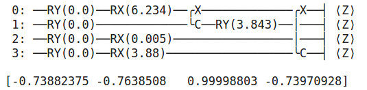
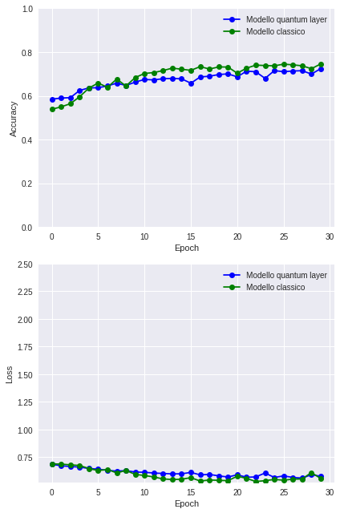

La Quanvolutional Neural Networks è l'applicazione di una Convolutional Neural Networks
con il Quantum computing creando un quantum machine learning model.
Nell'esempio sottostante creato su Colab Notebooks si crea un modello ibrido dove i dati estratti dalle immagini
vengono inseriti in un circuito quantistico creato con Pennylane un framework open source.
I dati vengono estratti dalle foto con lo stesso principio della convulational con un kernel di 2x2 pixel.
Partendo dall'alto a sinistra ci si sposta verso destra e poi in basso sempre da sinistra a destra.
Come detto i dati così estratti vengono inseriti nel circuito.
L'output del circuito diviene poi l'input che inseriamo in un modello classico usato per la
classificazione delle immagini.
Per prima cosa installiamo le librerie necessarie
!pip install pennylane
!pip uninstall tensorflow
!pip install --upgrade tensorflow==2.1.0
Importiamo i moduli che poi verranno utilizzati
import pennylane as qml
import numpy as np
import tensorflow as tf
from tensorflow import keras
import matplotlib.pyplot as plt
Impostiamo alcune variabili
n_epochs = 35 #Number of epochs
n_layers = 1 #random layers
n_train = 6700 #Size dataset for training
n_test = 3300 #Size dataset for testing
CREADATICIRCUITO = False #If True Quantum pre-processing train/test images
np.random.seed(0) # Seed for NumPy random number generator
tf.random.set_seed(0) # Seed for TensorFlow random number generator
!unzip cat-and-dog.zip -d data
La prima volta carichiamo le immagini di cani e gatti. Qui saltiamo
questa parte.
esegui = True
if esegui:
import os
#carica dati images cats and dogs
.....
#creo lista y_test e Y_train x cats and dogs
Nella fase precedente abbiamo generato un array con i dati delle immagini ed un
altro con 0 che indica che si tratta di cat o 1 se dog.
Ora separiamo in modo random il 33% per l'archivio del test set ed il resto per il training set.
from sklearn.model_selection import train_test_split
X_train, X_test, y_train, y_test = train_test_split(
testitra, yy, test_size=0.33, random_state=42)
Selezione del numero di foto da inserire nel circuito sia per la fase di training che di test
train_images = X_train[:n_train]
test_images = X_test[:n_test]
Viene aggiunta una dimenione nell'array perchè il circuito vuole in input un
array da 4 dimensioni
train_images = train_images[..., tf.newaxis]
test_images = test_images[..., tf.newaxis]
Selezione dello stesso numero di etichette delle immagini 0=cat 1=dog
train_labels = y_train[:n_train]
test_labels = y_test[:n_test]
Definizione del circuito con Pennylane - device con 4 Qubits
dev = qml.device("default.qubit", wires=4)
#circuit parameters random
randparameter = np.random.uniform(high=2 * np.pi, size=(n_layers, 4))
randp=randparameter[0]
def layerRandom(kernel= None):
nq = 4
np.random.seed(42) # per numeri random che non cambiano ogni esecuzione
rotation = [RX, RY , RZ]
qubit = list(range(nq))
i = 0
while i < len(randparameter):
if np.random.random() > 0.30: #0.30 ratio rotation cnot gate
#scelta random del gate da inserire nel circuito
gate = np.random.choice(rotation)
qu = np.random.choice(qubit)
gate(kernel[i][i],wires=qu )
i += 1
else:
if len(qubit) > 1:
#scelta random su quale qubit inserire il gate CNOT
on_qubit = np.random.permutation(qubit)[:2]
on_qubit = list(on_qubit)
CNOT(wires=on_qubit)
return
@qml.qnode(dev)
def circuit(dati=None):
#Inserimento dei dati
for i in range(4):
qml.RY(np.pi * dati[i], wires=i)
#inserisco gate random nei qubits
layerRandom(randp)
#Measurement - ottengo in output 4 valori
return [qml.expval(qml.PauliZ(i)) for i in range(4)]
Simulazione del circuito quantico con input tutti zeri
qml.about()
result = circuit(dati=[0,0,0,0])
print(circuit.draw())
print(result)
Nell' immagine vediamo il circuito creato con i 4 qubits ed i gates creati e sotto il risultato ottenuto

La funzione sottostante passa i dati presi dall'immagine(range 2x2) nel circuito
ed il risultato ottenuto inserito in array che poi verrà inserito nella rete neurale
def quantconv(image):
"""Fase convolves img into quantum circuit."""
ris = np.zeros((14, 14, 4))
#Come nella conv fase da top-left pixel of 2X2
for j in range(0, 28, 2):
for k in range(0, 28, 2):
#invio 2x2 region of the image into quantum circuit
q_results = circuit( dati=[image[j, k, 0], image[j, k + 1, 0],
image[j + 1, k, 0], image[j + 1, k + 1, 0]])
#Assegnazione valori differenti canali output pixel (j/2, k/2)
for c in range(
ris[j // 2, k // 2, c] = q_results[c])
return ris
Se non fatto in precedenza si caricano i dati nel circuito ed ottenuti i risultati sia per le immagini
di training che testing vengono creati ora e salvati su 2 array quTrain e quTest
if CREADATICIRCUITO:
quTrain = []
#prendo dati immagini e li processo nel circuito
for idx, img in enumerate(train_images):
#creo lista con risultati
quTrain.append(quantconv(img))
quTrain = np.asarray(quTrain)
quTest = []
#processo img per fase testing
for idx, img in enumerate(test_images):
#creo lista risultati per test
quTest.append(quantconv(img))
quTest= np.asarray(quTest)
#Salvo risultati in numpy array
np.save("quTrain.npy", quTrain)
np.save("quTest.npy", quTest)
from google.colab import files
files.download('quTrain.npy')
files.download('quTest.npy')
else :
from google.colab import files
files.upload('quTrain.npy')
files.upload('quTest.npy')
Load array precedentemente elaborati
quTrain = np.load("quTrain.npy")
quTest= np.load("quTest.npy")
Creazione modello di Convolution Neural Network per la classificazione delle immagini
inserite
from tensorflow.keras import Sequential
from tensorflow.python.keras.layers import Dense
from tensorflow.python.keras.layers import Conv2D
from tensorflow.python.keras.layers import MaxPooling2D
from tensorflow.python.keras.layers import Flatten, Dropout
from tensorflow.keras.optimizers import SGD
M2():
model = Sequential()
model.add(Conv2D(32, (3, 3), activation='relu', kernel_initializer='he_uniform',
padding='same', input_shape=(14, 14, 4)))
model.add(MaxPooling2D((2, 2)))
model.add(Dropout(0.2))
model.add(Conv2D(64, (3, 3), activation='relu', kernel_initializer='he_uniform',
padding='same'))
model.add(MaxPooling2D((2, 2)))
model.add(Conv2D(128, (3, 3), activation='relu', kernel_initializer='he_uniform',
padding='same'))
model.add(MaxPooling2D((2, 2)))
model.add(Dropout(0.5))
model.add(Flatten())
model.add(Dense(128, activation='relu', kernel_initializer='he_uniform'))
model.add(Dropout(0.5))
model.add(Dense(1, activation='sigmoid'))
#compile model
opt = SGD(lr=0.001, momentum=0.9)
model.compile(optimizer=opt, loss='binary_crossentropy', metrics=['accuracy'])
return model
Creata istanza ed esecuzione modello con inseriti i dati ottenuti dal circuito quantistico
quantum_model = M2()
quTrain = quTrain[:n_train]
q_history = quantum_model.fit(
quTrain,
train_labels,
validation_data=(quTest, test_labels),
batch_size=4,
epochs=n_epochs,
verbose=2,
)
Creata istanza ed esecuzione del modello con inseriti i dati delle immagini otttenuti
con il classico metodo per le reti neurali
classical_model = M2()
c_history = classical_model.fit(
train_images,
train_labels,
validation_data=(test_images, test_labels),
batch_size=4,
epochs=n_epochs,
verbose=2,
)
Creazione del grafico per il confronto dei risultati ottenuti inserendo nel modello sia i dati
delle immagini ottenuti nel modo classico che con il circuito quantistico
import matplotlib.pyplot as plt
plt.style.use("seaborn")
fig, (ax1, ax2) = plt.subplots(2, 1, figsize=(6, 9))
ax1.plot(q_history.history["val_accuracy"], "-ob", label="Modello quantum layer")
ax1.plot(c_history.history["val_accuracy"], "-og", label="Modello classico")
ax1.set_ylabel("Accuracy")
ax1.set_ylim([0, 1])
ax1.set_xlabel("Epoch")
ax1.legend()
ax2.plot(q_history.history["val_loss"], "-ob", label="Modello quantum layer")
ax2.plot(c_history.history["val_loss"], "-og", label="Modello classico")
ax2.set_ylabel("Loss")
ax2.set_ylim(top=2.5)
ax2.set_xlabel("Epoch")
ax2.legend()
plt.tight_layout()
plt.show()
L'analisi dei risultati non mostra divergenze importanti tra i risultati ottenuti tra i 2
metodi ma naturalmente bisogna effettuare altri esperimenti sia modificando il circuito quantistico
che il modello di CNN
